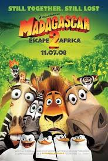

| Título do Filme | Link | Opinião | Capa |
|---|---|---|---|
| Madagascar 2 | Assistir | Alex, Marty e outros animais do jardim zoológico do Central Park encontram uma maneira de fugir para Madagascar quando os pinguins montam um avião destruído. A embarcação precária fica no ar apenas o suficiente para chegar ao continente africano. Na África, os habitantes de Nova York encontram suas próprias espécies pela primeira vez. Quando o continente revela-se um lugar selvagem, Alex e seus companheiros se perguntam se ficar por lá é melhor do que em seu lar no Central Park. |  |
| Carros o Filme | Assistir | Ao viajar para a Califórnia, o famoso carro de corridas Relâmpago McQueen se perde e vai parar em Radiator Springs, uma cidadezinha na Rota 66. Ele conhece novos amigos e aprende lições que mudam sua forma de encarar a vida. | |
| Up Altas Aenturas | Assistir | Carl Fredricksen é um vendedor de balões que, aos 78 anos, está prestes a perder a casa em que sempre viveu com sua esposa, a falecida Ellie. Após um incidente, Carl é considerado uma ameaça pública e forçado a ser internado. Para evitar que isto aconteça, ele põe balões em sua casa, fazendo com que ela levante voo. Carl quer viajar para uma floresta na América do Sul, onde ele e Ellie sempre desejaram morar, mas descobre que um problema embarcou junto: Russell, um menino de 8 anos. | |
| Divertidamente 2 | Assistir | Com um salto temporal, Riley se encontra mais velha, passando pela tão temida adolescência. Junto com o amadurecimento, a sala de controle também está passando por uma adaptação para dar lugar a algo totalmente inesperado: novas emoções. As já conhecidas, Alegria, Raiva, Medo, Nojinho e Tristeza não têm certeza de como se sentir quando novos inquilinos chegam ao local. |